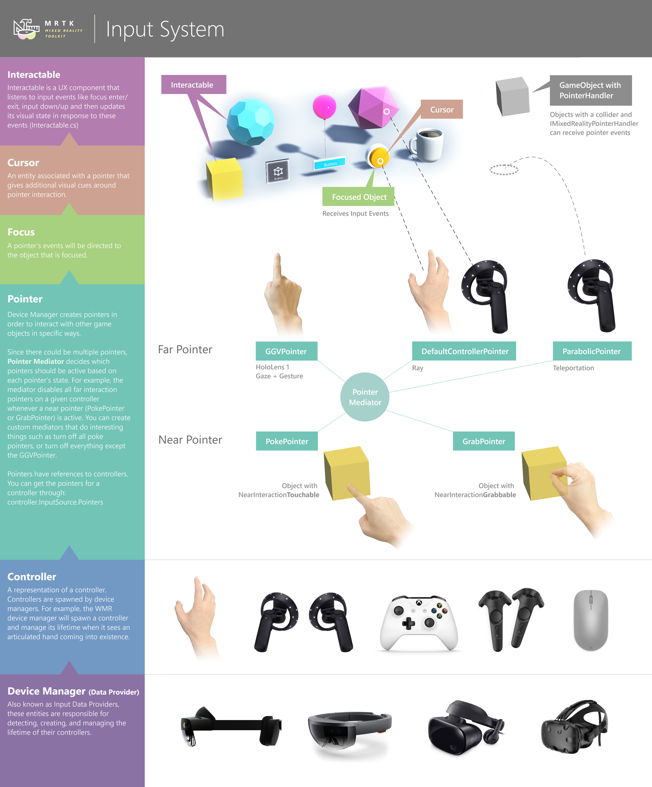

输入系统
在MRTK提供的所有功能中，输入系统是最大的系统之一。工具包中的许多内容都建立在它之上（指针pointers，焦点focus，预制体prefabs）。输入系统中的代码允许自然交互，例如跨平台抓取和旋转。
输入系统具有一些自己的术语，值得定义：
Data providers(数据提供者)
输入配置文件中的输入设置引用了称为数据提供者（data providers）的实体-另一个描述这些实体的词是设备管理器。这些组件的工作是通过与特定的底层系统接入来扩展MRTK输入系统。provider的一个示例是Windows Mixed Reality provider，它的工作是与基础Windows Mixed Reality API进行对话，然后将这些API中的数据转换为下面的MRTK特定的输入概念。另一个示例是OpenVR provider（其工作是与Unity抽象的OpenVR API版本进行通信，然后将数据转换为MRTK输入概念）。
Controller(控制器)
物理控制器的表示形式（无论是6自由度控制器，带手势支持的HoloLens 1型手，全关节手，跳跃运动控制器等）。控制器由设备管理器（device manager）生成（例如，WMR设备管理器会在看到全关节手出现时，生成一个控制器并管理其寿命）。
Pointer(指针)
控制器使用指针与游戏对象进行交互。例如，近距离交互指针负责检测手（它是控制器）何时靠近那些支持“近距离交互”的对象。指示器的其他示例是远距传递或远距指针（即手部射线指针），它们使用远射线投射来与长出用户的手臂的内容进行交互。
指针由设备管理器创建，然后附加到输入源。要获取控制器的所有指针，请执行:
controller.InputSource.Pointers请注意，控制器可以同时与许多不同的指针相关联–为了确保不会陷入混乱，有一个指针调解器（pointer mediator）可以控制允许激活哪些指针（例如，调解器将当检测到近距离交互时，禁用远距离交互指针）。
Focus(焦点)
指针事件发送到焦点对象。焦点的选择因指示器类型而异-手部射线指示器将使用射线，而食指的戳动指示器将使用球形投射。对象必须实现IMixedRealityFocusHandler才能获得焦点。可以全局注册一个对象以接收未过滤的指针事件，但是不建议使用此方法。
更新焦点对象的组件是FocusProvider
Cursor(光标)
与指针关联的实体，在指针交互时提供额外的视觉提示。例如，FingerCursor会在您的手指周围呈现一个圆环，并且当您的手指靠近“近处可交互”的对象时可以旋转该环。一个指针可以同时与一个光标关联。
Interaction and Manipulation(交互与操作)
可以使用交互或操作脚本标记对象。这可以通过
Interactable, 或类似于NearInteractionGrabbable/ManipulationHandler.例如，NearInteractionGrabbable和NearInteractionTouchable允许某些指针（尤其是近处交互的指针）知道哪些对象可以成为焦点。
Interactable和ManipulationHandler是侦听指针事件以修改UI视觉效果或移动/缩放/旋转游戏对象的组件的示例。
下图捕获了MRTK输入栈的高级构建（从下至上）：
